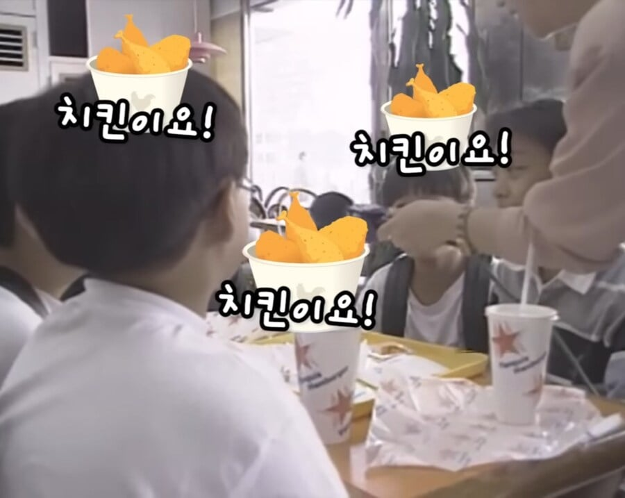
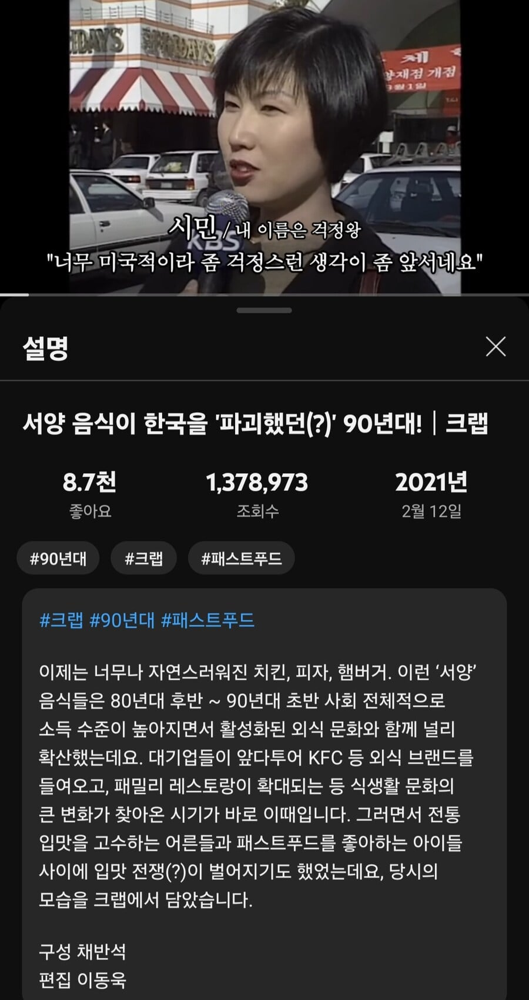

이젠 없어서 못먹음


이젠 없어서 못먹음
잘 끓여서 먹어봐 삼겹살 끝도없이 들어간다
푹 익힌 돼지김치찜 머거라.

?? 김치먹는데 이가 왜 시리지
김치만 먹이려니까 못먹는거지 소세지랑 미역국이랑 같이주면 중간중간 칼칼한게 땡겨서 먹게 된다니까요
ㅋㅋㅋㅋㅋㅋㅋ 김치 없으면 라면은 뭐랑 먹을려구...
김치 비싸 ㅠㅠ
중국산 김치도 익히면 먹을만 한데
뭔가 찝찝혀
김치찌개 완성품보다 김치가 더 비쌈 ㅅㅂ
근황이래서 저 잼민이들 본인들이 댓글에
지금은 잘 먹고 있습니다.
이런거 써놓은줄
깍두기 잘 하는 집 찾고 싶다
첫짤부터 흠칫 놀랐네
그시절 식탁보면 풀떼기밖에 없으니 안먹음 ㅇ;;
요리 안에 들어있는건 어쩔수없이 먹어도 김치 단품을 따로 먹지는 않음
라면에 김치가 없었더라면~~ 무슨 맛으로 라면을 먹을까~~
하나만 먹는거면 누가 김치 고르냐 당연히 피자 치킨 고르지 ㅋㅋㅋㅋ
그래 어릴때 많이먹어둬라.. 나중앤 소화안돼서못먹는다
난 김치 아직도 안먹는데
존나짜고 짜기만함
이번에도 본가에서 김장담구는데
도와주기만 하고 김치 안가져옴
마운자로 맞으면 딱 저런류의 음식에 대한 갈망이 사라지더라. 그래도 김치에 대한 선호도는 어릴때랑 전혀 변화가 없음
사먹는 김치 되면서 김치 자체가 호불호 없이 좀 맛있어진 차이도 있음
요즘은 애기들도 김치 잘 먹더라
근데 솔직히 김치가 건강에 더 안좋음ㅋㅋㅋㅋ
김치가 몸에 안좋다고?
몰랐냐? 김치먹은 사람중 99프로가 100년안에죽는다함
헉... 김치 이제 그만 먹어야겠다
저 아이들 이제 40대 중후반인가?
요즘 김치소비량 줄었다던데
수육에 김치 무바라
볶음밥에 들어가면 또 얘기가 달라짐 ㅋㅋ
첫번째 초딩 옳그떠닮은거같은데 맞음?
아예 겉절이거나 불로익힌거 아니면 잘 안먹게돼
김치왜 못먹는지 앎?
너희집안김치가존나맛없어서임 ㅋㅋㅋㅋ
나물줘라
김치 안먹던 어린이: 돈없어서 두달째 배추,무,열무등등 김치만 돌려먹는중
엄청 특이한 경우를 제외하고
대한민국 외식이나 급식 메뉴 대부분이 김치 있음&곁들임을 상정하고
간이랑 조합을 짜서 먹을수밖에없고
먹다보면 맛있게 먹게될수밖에 없는듯
나도 어릴때 김치 안 먹었는데 요즘은 걍 쌀밥에 무한으로 들어감
진짜 김치가 없어서 못먹는다...사먹으려니 비싸서 엄마가 김장하는날만 기다린다
햅쌀밥에 물 말아서 갓 만든 김치한점
중학교 넘으면 알아서 먹음
확실히 옛날 어르신들 김치 소비량은 못따라가는듯 국밥 발사대 삼겹살 발사대 정도로만 먹지 반찬으로는 잘 안집어먹게됨
아냐 이제는 이가 시려서 김치를 못 먹겠더라